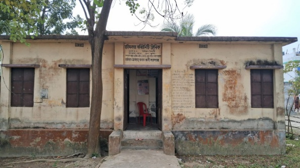
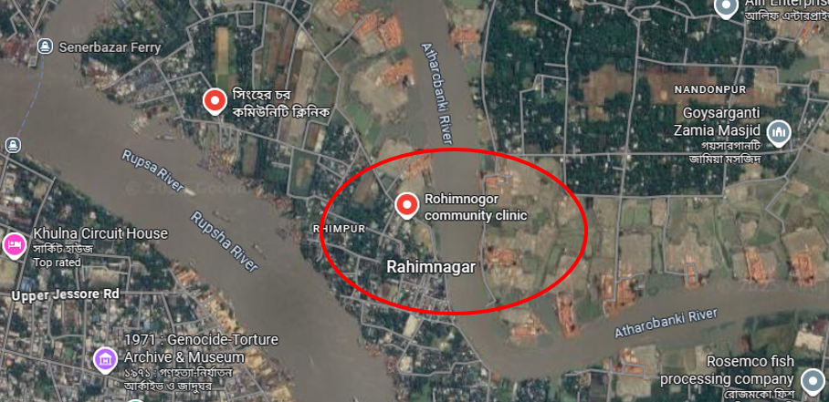
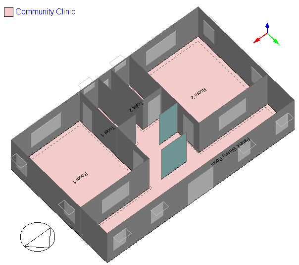
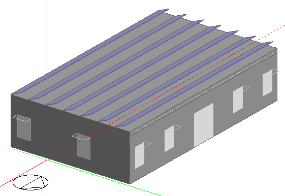
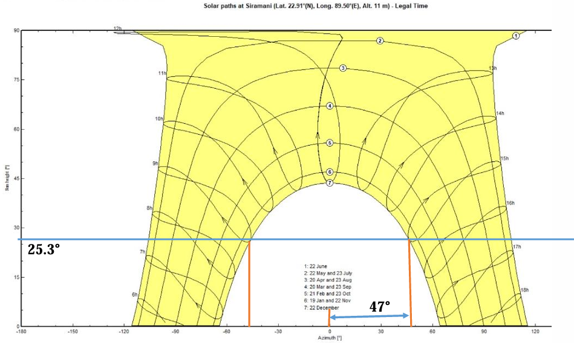
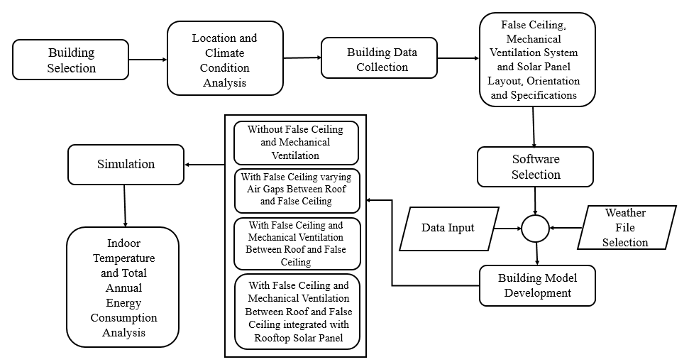
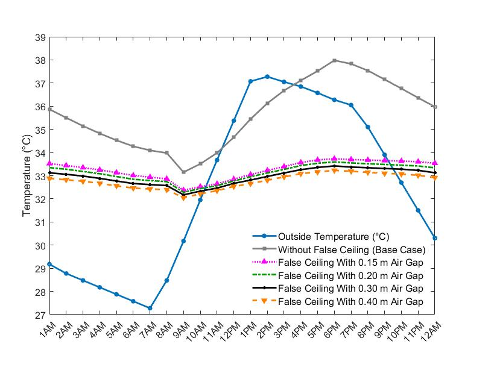
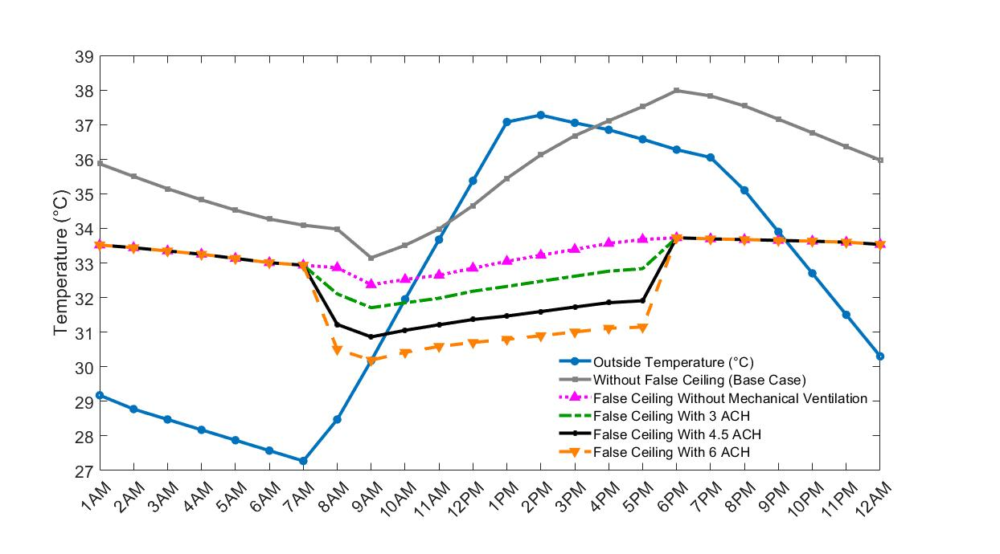
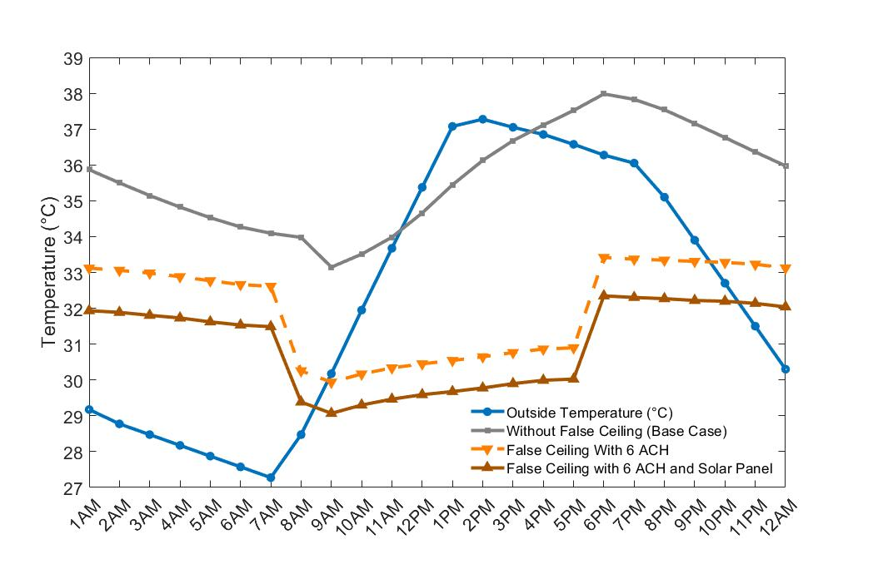
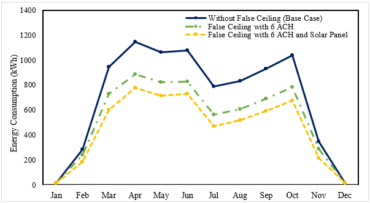

Numerical Analysis of Passive and Active Cooling Strategies with Rooftop Solar Integration for Indoor Comfort and Energy Efficiency in Community Clinics in Bangladesh
Bangladesh’s hot and humid climate poses significant challenges to maintaining thermal comfort and energy efficiency in rural community clinics. This study examines the effect of false ceiling with varying air gaps between the roof and false ceiling, mechanical ventilation and rooftop solar panel integration on indoor temperature and total annual energy consumption in a single storey 3.5m height clinic.
Why community clinics
Community clinics are the first point of healthcare contact across rural and underdeveloped regions of Bangladesh. In the humid season, fans are typically the only cooling available — and fans alone do not deliver a comfortable indoor environment. The result is a building that is uncomfortable to work in and to be treated in, with operating costs that keep climbing as energy prices rise.
Plenty of research exists on thermal comfort strategies, and plenty on rooftop solar. What was missing was the combination: how passive measures, active ventilation and photovoltaic generation behave together when you are optimising indoor temperature and total energy consumption at the same time. That gap is what this study set out to close.
Objectives
- Model an existing building in DesignBuilder.
- Analyse indoor temperature and annual energy consumption under passive and active cooling strategies and integrated rooftop solar panels.
- Compare those cases against each other to identify an optimised configuration.
The building
Rahimnogor Community Clinic in Khulna was used as the case building — modelled from its actual location, orientation and construction rather than a generic archetype. Roof, wall, floor and false ceiling assemblies were each specified layer by layer, and a sun path analysis for the site established the panel geometry: 23° tilt, 47° azimuth, 25.3° solar elevation.







Result 1: the air gap does most of the passive work
Widening the air gap between roof and false ceiling produced a progressive drop in mean indoor temperature: 2.4 °C at 0.15 m, rising to 2.9 °C at 0.40 m. The mechanism is straightforward. The gap resists heat transfer and acts as a thermal buffer, so the wider it is, the more it slows heat flow into the room.

The energy picture follows the same shape. Annual consumption falls from 8,479.89 kWh in the base case to 7,162.29 kWh with a 0.40 m gap — a 15.54% reduction from a measure with no moving parts and no running cost.
| Case | Annual energy (kWh) | Reduction |
|---|---|---|
| Base case | 8,479.89 | — |
| 0.15 m gap | 7,610.28 | 10.25% |
| 0.20 m gap | 7,481.44 | 11.77% |
| 0.30 m gap | 7,316.78 | 13.72% |
| 0.40 m gap | 7,162.29 | 15.54% |
Result 2: ventilating the gap roughly doubles the benefit
A static air gap traps heat. Scheduling an exhaust fan across the clinic's operating hours, 8:00 AM to 5:00 PM, removes that accumulated heat by convection before it reaches the occupied space. At a 0.15 m gap, mean indoor temperature drop rises from 2.71 °C at 3 ACH to 3.35 °C at 6 ACH. Paired with the widest gap, the combination reaches 3.88 °C and a 25.33% annual energy reduction.

| Ventilation rate | 0.15 m gap | 0.30 m gap | 0.40 m gap |
|---|---|---|---|
| None | 7,610.28 | 7,316.78 | 7,162.29 |
| 3 ACH | 7,200.29 | 6,900.98 | 6,747.03 |
| 4.5 ACH | 6,914.61 | 6,653.82 | 6,488.35 |
| 6 ACH | 6,736.92 | 6,470.29 | 6,331.82 |
Total annual energy consumption in kWh, against a base case of 8,479.89 kWh.
Result 3: solar closes the gap in the months that matter
Adding rooftop PV to a 0.30 m false ceiling running at 6 ACH brings the total mean indoor temperature reduction to 4.68 °C and annual consumption down to 5,511.26 kWh — a 35.01% cut against the base case, with the panels contributing 958.93 kWh of net annual generation.
The monthly breakdown is where the value shows most clearly. In July, consumption falls from 786.56 kWh in the base case to 565.24 kWh with the false ceiling alone, and to 468.26 kWh once the panels are added. The savings concentrate in exactly the summer months when the cooling demand — and the solar resource — are both at their highest.


Conclusions
- A false ceiling with a 0.40 m air gap alone gives a 2.9 °C mean indoor temperature reduction and 15.54% annual energy saving.
- Adding mechanical ventilation at 6 ACH to that gap raises it to 3.88 °C and 25.33%.
- A 0.30 m gap with 6 ACH ventilation and rooftop solar delivers 4.68 °C and 35.01% — the optimised configuration, and the one I would recommend.
Worth noting that the optimum uses the 0.30 m gap rather than the widest one. Beyond a point, ceiling height given up to the void costs more than the extra insulation returns — which is the kind of trade-off that only shows up once you model the whole system together rather than each measure in isolation.